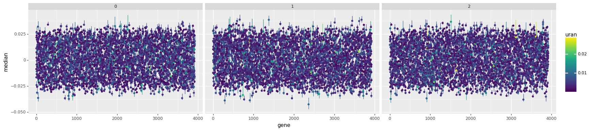

Code
# ggplot2, ggsankey, ggalluvial and dplyr must be installed
library(ggplot2)
library(ggsankey)We think we could use a sparse Bayesian independent component analysis model to describe gene regulation in E. coli and other organisms for which there is RNA sequencing data. This document explains why we think this, how we would like do it and where we need help.
Living cells respond to environmental changes by up- or down-regulating their genes, thereby changing the proportion in which the cell produces proteins, which in turn alters the cell’s behaviour. For example, a cell that moves into a toxic environment might alter its gene expression so as to increase production of a protein that exports the toxin or to decrease toxin-importing proteins.
By analysing RNA transcripts it is possible to measure gene expression and see how it varies across conditions. There is now so much transcriptomics data available that it plauibly contains sufficient information to learn how some organisms orchestrate their gene regulation. Tan et al. (2020) achieved this goal using a method based on independent component analysis or ICA, leading to the development of the concept of an Imodulon.
An Imodulon is a hypothetical latent allocation of weights to a subset of genes derived from the results of an analysis involving ICA, that is taken to represent a way that a cell can regulate its genes in response to changing conditions. For example, suppose a certain Imodulon I1 regulates just two genes G1 and G2 with respective weights 0.5 and -0.5. When I1 is activated, G1 will be up-regulated and G2 will be down-regulated by the same amount. In contrast, when I1 is deactivated, the opposite regulation will occur. It is typically presumed that there are far fewer Imodulons than genes, that an Imodulon will substantially up- or down-regulate the genes that it affects, and that most Imodulons will affect a relatively small number of genes.
It is plausible that Imodulons roughly describe how gene regulation works because of the known existence of transcription units, transcription factors and regulons. Transcription units are sets of genes that share an RNA binding site and can therefore only be regulated together. Transcription factors are proteins that activate or deactivate particular transcription units. Regulons are sets of genes that are regulated by exactl the same transcription factors. Since there are known to be many of all these things, it is likely that a latent representation like Imodulons is roughly correct. In particular, based on the regulonDB it is clear that most transcription factors affect a small number of genes and that there are fewer transcription factors than genes.1
1 Note that Imodulons are not the same as transcription factors!
Whereas previous analyses have attempted to fit ICA models using an approach based on optimisation, we would like to fit a Bayesian statistical model that implements ICA. We would like our statistical model to include an explicit representation of the assumptions about Imodulon sparsity outlined above.
Independent component analysis assumes that the numbers comprising an \(I\times J\) matrix of observations \(X\) are generated by taking weighted sums of a known number \(K < J\) independent component vectors, as shown below: 2
2 Term names chosen for consistency with the Imodulon papers
\[ \begin{equation} x_{ij}=\sum_{k=1}^{K} m_{ik}a_{kj} \end{equation} \tag{1}\]
or in matrix notation
\[ \begin{equation} X = MA \end{equation} \tag{2}\]
It is assumed that the columns of the matrix \(A\) are column-wise probabilistically independent, so that the probability of the \(j\)th column of \(A\) is the product of the \(K\) marginal probabilities, i.e. \(p(a_{:j}) = \prod_{k=1}^I p(a_{kj})\). Secondly, it is also assumed that the rows of \(A\) have non-Gaussian marginal distributions. See Hyvärinen and Oja (2000) for a discussion of an optimisation based approach to Independent component analysis and Roberts and Choudrey (2005) for a discussion of Bayesian independent component analysis.
In the canonical application of ICA each row of \(X\) represents a time course of signals from a receiver detecting input from \(k\) sources; each row of \(A\) represents the time course of signals from a source; each column of \(M\) represents how a source mixes between receivers. In the context of a transcriptomics data analysis the observation units are genes rather than receivers, the observation rows represent separate experiments rather than time courses and the columns of the matrix \(M\) represents proto-Imodulons, i.e. mixing weights for each gene for each proto-Imodulon. A separate downstream analysis is required in order to sparsify the results by removing genes from Imodulons and discarding some candidate Imodulons.
The Python library Scikit learn provides access to an implementation of ICA based on minimsation of mutual information, as outlined in Hyvärinen and Oja (2000).
The precise-db provides a large collection of RNA sequencing data that can be used to create suitable input for independent component analysis.
Like with other RNA sequencing data, each gene expression measurement in precise-db starts as a count of the number of times an mRNA fragment that maps to the gene was detected in the experiment fragments per transcript. Unfortunately such counts are not comparable between genes within a sample because they are sensitive to the size of the mRNA fragment that encodes the gene (a big gene will tend to be counted more often than an equally expressed small gene). Raw counts are also not comparable between samples because of potential variations in sequence depth (i.e. the total number of measurements from the sample) and the mRNA-fragment-to-gene map used. Consequently the usual practice is to transform raw counts by first normalising based on the gene size and then ‘proportionising’, ending with a relative unit called transcripts per million or TPM:
\[ \begin{equation} TPM(g) = \frac{count(g)/size(g)}{\sum_{i\in sample}count(i)/size(i)} \end{equation} \tag{3}\]
See Zhao, Ye, and Stanton (2020) for discussion of the transcripts per million normalisation and for references to more papers about RNA sequencing experiments.
For use in imodulon analysis further transformations are performed. First the transcripts per million are put on log scale, then the log-transcripts per million of a reference condition are subtracted. Finally the data are whitened using scikit-learn’s arbitrary-variance option.
There are several general reasons to prefer Bayesian ICA models to models that use a maximum likelihood approach, including automatic relevance detection, the potential to take into account quantitative non-measurement information through a prior model, and the avoidance of pathological model behaviour due to bad or incomplete observations. These general reasons are discussed in Roberts and Choudrey (2005).
These advantages are particularly pertinent for the application of ICA to attempting to infer Imodulons from RNA sequencing data.
First, as described in Roberts and Choudrey (2005), a Bayesian ICA model can potentially use automatic relevance detection to find an appropriate number of Imodulons to postulate. Whereas in the current framework the appropriate number of Imodulons is determined using a procedure that is separate from the main inference and motivated by computational and algorithmic considerations—primarily whether the algorithm successfully converges—rather than substantive statistical ones, relevance detection based on hyperparameters in the context of a Bayesian model is well-motivated and does not require downstream processing.
Second, there is substantial non-experimental information about Imodulons that should provide important context to RNA sequencing measurements. In particular, as discussed above investigation of regulons and transcription factors suggests that an Imodulon should typically affect a relatively small number of genes. Maximum-likelihood based Imodulon analysis uses another non-statistically-motivated downstream procedure to impose this sparsity after fitting an ICA model. We would like to represent this information in a Bayesian ICA model by using a sparsity-inducing prior for the columns of the mixing matrix \(M\).
Another potential source of non-experimental information is the research into regulons and transcription factors itself. Many genes, particularly those in a species’s ‘core’ genome that are common to almost all strains, are known in advance to share specific regulators, and this information can be taken into account in a Bayesian framework through informative priors on specific elements of the mixing matrix \(M\).
Finally, the robustness gained by using a Bayesian statistical analysis is likely to be helpful when attempting to infer Imodulons for species with fewer RNA sequencing experiments.
Ultimately we would like to create a sparse Bayesian ICA model that can reproduce the analysis in Tan et al. (2020) of the precise-db dataset. This analysis inferred 92 Imodulons from RNA sequencing measurements of 4386 genes in 278 conditions. We would then like to use the same approach to analyse RNA sequencing data from organisms with fewer measurements and to augment our model with informative priors based on information about regulons.
As a proof of concept we would like to generate and then fit a smaller artificial dataset with uninformative but still sparsity-inducing priors, then fit the same model to a subset of the precise-db dataset.
We can consider an ICA successful if it provides robust imodulons. These robustness can be measured in two ways: experimental saturation and internal replicability.
Experimental saturation is achieved when the imodulons remain stable upon adding more experiments. We can simulate this by random ablation of the experimental conditions before performing ICA.
We should see first that the number of imodulons remains the same and, second, that the number of genes in each imodulon remains more or less the same (parameters in \(M\)). Both can be visualized with a sankey plot.
# ggplot2, ggsankey, ggalluvial and dplyr must be installed
library(ggplot2)
library(ggsankey)We have run ICA for 25 to 39 random conditions on a private dataset and gathered the \(M\) matrices on a single dataset.
# data has been anonymized since it is part of a private dataset
df <- read.csv("data/out_sankey_anon.tsv", sep = "\t")
# fix the modulon_this column for the last stage
df[df$stage == "39_10", "modulon_this"] <- df[df$stage == "39_10", "modulon"]Figure 1 shows that the number of imodulons is not stable across ablation runs (see the jump from 29 to 30). The composition of each imodulon does not seem to be very stable. Additionally, this plot hightlights the high number of genes that are not assigned to any imodulon.
ggplot(df, aes(x = stage, next_x = factor(next_stage),
node = factor(modulon_this),
next_node = factor(modulon_next),
fill = factor(modulon_this), label = modulon_this)) +
geom_alluvial(flow.alpha = .4, node.alpha = .7,
width = .25, node.color = "gray70") +
geom_alluvial_text(size = 2, color = "gray20") +
scale_fill_viridis_d() +
theme_alluvial(base_size = 16) +
labs(x = NULL) +
theme(legend.position = "none", axis.text.x = element_text(angle = 90))
There are some artifacts were some of the genes appear to flow into nothing (see imodulon 0 at the bottom). This should not be possible since all genes get assigned to a node (modulon) on every stage (condition run). The issue is that genes can be part of more than one imodulon and that results in “duplicated” strands of flow (alluvium) disappearing.
In the same line of “experimentally saturated”, we can check whether an imodulon has stable activity for the different conditions across ablation runs (parameters in \(A\)).
library(ggalluvial)
library(dplyr)From the aforementioned ICA runs, the \(A\) matrices were also gathered.
df_cond <- read.csv("data/out_sankey_cond_anon.tsv", sep = "\t")
head(df_cond) X modulon condition weight stage next_stage
1 0 0 S0 -0.8864822 26_10 NA
2 1 1 S0 1.3514882 26_10 NA
3 2 2 S0 1.7112368 26_10 NA
4 3 3 S0 2.3598187 26_10 NA
5 4 4 S0 5.3243216 26_10 NA
6 5 5 S0 -0.3278940 26_10 NALet’s prepare the data a bit:
df_cond_abs <- df_cond
df_cond_abs$weight <- abs(df_cond_abs$weight)
df_cond_abs$modulon_condition <- paste(df_cond_abs$modulon,
df_cond_abs$condition, sep = "_")
complete <- tidyr::complete(df_cond_abs, modulon_condition,
stage, fill = list(weight = 0))
complete[is.na(complete$modulon), "modulon"] <- as.numeric(stringr::str_split_fixed(complete[is.na(complete$modulon), ]$modulon_condition, "_", 2)[, 1])
complete[is.na(complete$condition), "condition"] <- stringr::str_split_fixed(complete[is.na(complete$condition), ]$modulon_condition, "_", 2)[, 2]Color based on experimental conditions (“condition” is the biological replicate in the dataframe):
complete_exp <- complete %>%
mutate(experiment = case_when(stringr::str_starts(condition, "local") ~
stringr::str_extract(condition, "local_([0-9]{3})[a-z]?_", group = 1),
!stringr::str_starts(condition, "local") ~ "S"))Figure 2 shows the same problem as before but now for the conditions. In general, the weights of the imodulons over the conditions are not very stable across runs.
ggplot(complete_exp,
aes(x = stage, stratum = factor(condition),
alluvium = modulon_condition, y = weight, label = condition)) +
geom_stratum(aes(color = factor(experiment))) +
geom_alluvium(aes(fill = factor(modulon))) +
geom_text(stat = "stratum", size = 2, color = "gray30") +
scale_fill_viridis_d() +
theme_minimal() +
theme(text = element_text(size = 16)) +
#theme(legend.position = NaN) +
xlab("Condition run") +
ylab("Condition weight")
Finally, for the replicability measure we can check whether the conditions display the same imodulon profile across biological replicates for the whole (non-ablated) dataset.
df_cond_39loc <- df_cond %>%
filter(stage == "39_10", stringr::str_starts(condition, "local")) %>% # only the local ones are actual bio replicates
mutate(experiment = stringr::str_extract(condition, "local_([0-9]{3})[a-z]?_", group = 1)) %>% # extract the experiment (OOX)
mutate(`biological replicate` = stringr::str_extract(condition, "[A-Z]$")) # extract the biological replicate (A,B,C)
head(df_cond_39loc) X modulon condition weight stage next_stage experiment
1 28 0 local_031_A -5.1886962 39_10 NA 031
2 29 1 local_031_A -0.8093426 39_10 NA 031
3 30 2 local_031_A -8.3916830 39_10 NA 031
4 31 3 local_031_A 1.3236297 39_10 NA 031
5 32 4 local_031_A -3.0924300 39_10 NA 031
6 33 5 local_031_A -16.3806644 39_10 NA 031
biological replicate
1 A
2 A
3 A
4 A
5 A
6 AIn this case, in Figure 3 the experimental condition 005 does not show good replicability.
ggplot(df_cond_39loc, aes(x = modulon, color = factor(`biological replicate`),
y = weight)) +
geom_line() +
facet_wrap("~experiment", scales = "free") +
theme_minimal() +
theme(text = element_text(size = 22.0)) +
labs(color = "Biological replicate")
In contrast to the model in Hyvärinen and Oja (2000) and previous Imodulon analyses we propose to include measurement noise in our statistical model. Although it would perhaps be preferable to model the whole data generation process up to the production of untransformed raw counts, for the sake of simplicity and easier comparison with previous approaches we will use the following simple linear regression model for transformed RNA sequencing data, assuming known measurement error \(\sigma\):
\[ \begin{equation*} y \sim N(\hat{y}, \sigma) \end{equation*} \tag{4}\]
In order to ensure that our model implements ICA we will use a column-wise independent and row-wise non-Gaussian prior distribution for the source strength matrix \(A\):
\[ \begin{equation*} a_kj \sim T4(0,1) \end{equation*} \tag{5}\]
In Equation 5 \(T4\) refers to the student-t distribution with 4 degrees of freedom. The use of a unit scale for each row is beause ICA models are identified only up to a change of scale
We will use independent regularised horseshoe priors for the columns of the mixing matrix \(M\):
\[ \begin{align*} m_{ik} &\sim N^+(0, \tau_k\tilde{\lambda}_{ik}) \\ \tilde{\lambda}_{ik})^2 &= \frac{c_k^2\lambda_{ik}^2}{c_k^2 + \tau_k^2\lambda_{ik}^2} \\ \lambda_{ik} &\sim C^+(0, 1) \\ c_k^2 &\sim \text{inverse gamma}(\alpha, \beta) \\ \tau_k &\sim C^+(0, \tau_{k0}) \end{align*} \tag{6}\]
In Equation 6 \(C^+\) and \(N^+\) refer respectively to Cauchy and Normal distributions with support only on the positive real line, and the terms \(alpha\), \(\beta\) and \(tau_{k0}\) are informative priors. Note that the mixing matrix prior is constrained to have support only on the non-negative real line. This is done, following Roberts and Choudrey (2005), to ensure sign consistency, so that a positive relative change in an Imodulon’s strength in a certain condition will always correspond to up-regulation of genes affected by that Imodulon.
We merely expressed Equation 6 in stan this with two matrices \(M\) and \(A\) instead of one (mimicking the ICA representation) that, when multiplied, give rise to \(\hat y\).
This worked for simulated data to some extent. For real data, using the precise-db, we faced the following issues:
The results retain some sparsity. These are some of the traces of some arbitrarily picked parameters of \(M\):
library(tidyr)
library(ggplot2)
df <- read.csv("data/lambda4.1start.csv")df %>%
pivot_longer(lambda_tilde_mode.4.1:lambda_tilde_mode.4.19, names_to = "params", values_to = "value") %>%
ggplot(aes(x = value, fill = params)) +
geom_density(alpha=0.3, color="gray") +
theme_minimal() +
theme(text = element_text(size = 18.0), legend.position = c(.9, .9))
The same for variational inference (took less than an hour):
df <- read.csv("data/lambda4.1_variational.csv")df %>%
pivot_longer(lambda_tilde_mode.4.1:lambda_tilde_mode.4.19, names_to = "params", values_to = "value") %>%
ggplot(aes(x = value, fill = params)) +
geom_density(alpha=0.3, color="gray") +
theme_minimal() +
theme(text = element_text(size = 18.0), legend.position = c(.9, .9)) +
scale_x_continuous(trans='log10')
Using partial pooling with shared parameters over the \(A\) matrix helped to achieve a better sampling, but still hitting the max tree depth set at 10 at every draw.
From the previous analysis, we can see that \(M\) and \(A\) matrices should be further constrained. The charasteristic constrain of ICA is the orthogonality; such that result is that of Independent Components.
Jauch, Hoff, and Dunson (2019) proposes a polar expansion (Equation 7) to achieve this. The authors proposed a PCA generative model using this expansion that we can adapt for our needs in Equation 8.
\[ \begin{align} \lambda(X) &= \texttt{eigenvalues}(X X^T) \\ X^p_{m} &= \frac{1}{\sqrt{\lambda(X)_m}} \end{align} \tag{7}\]
\[ \begin{align} M_{m,g} &\sim N(0, \sigma) \\ M^\ast &= M \xi(M) diag(M^p) \xi(M) \\ A_{m,g} &\sim N(0, \sigma) \\ A^\ast &= A \xi(A) diag(A^p) \xi(A) \\ \nu &\sim \text{inverse gamma} \\ D &\sim N(0, \tau) \\ y &\sim N(M^\ast diag(D) A^\ast, \nu) \end{align} \tag{8}\]
where \(\xi\) is defined as Equation 9. This of course did not produce sparse results (Figure 4).
\[ \xi(X) = \texttt{eigenvectors}(X X^T) \tag{9}\]

We can reintroduce the regularized horseshoe, this time only for the M priors after the orthogonality (\(M_p\)) and changing the prior of \(M\) to a t-student as in Equation 5. The 90 inferred modulons (chosen as the number identified by classical ICA) for Escherichia coli are shown in Figure 5, where sparsity can be seen for the different latent modulons.
import arviz as az
import numpy as np
import pandas as pd
# not included in the repo since it is 4 GB
idata = az.from_cmdstan(["../spbica/res/sparse_orthogonal_nov-20230915233645_1.csv"])
all_us = []
dfs = []
for i in range(90):
u = idata.posterior.U_tilde.sel({"chain": 0, "U_tilde_dim_1": i}).to_pandas()
u["modulon"] = i
dfs.append(u)
if i % 10 == 0:
all_us.append(
pd.melt(pd.concat(dfs), id_vars="modulon", var_name="gene")
.groupby(["modulon", "gene"])
.agg(
down=pd.NamedAgg("value", lambda x: np.percentile(x, 25)),
up=pd.NamedAgg("value", lambda x: np.percentile(x, 95)),
median=pd.NamedAgg("value", lambda x: np.percentile(x, 50)),
uran=pd.NamedAgg(
"value", lambda x: np.percentile(x, 95) - np.percentile(x, 25)
),
)
.reset_index()
)
del dfs
dfs = []
all_us = pd.concat(all_us)
all_us.to_csv("data/all_us_or.tsv", index=False, sep="\t")import pandas as pd
import plotnine as p9
all_us: pd.DataFrame = pd.read_csv("data/all_us_or.tsv", sep="\t")
(
p9.ggplot(
all_us.reset_index(),
# it would be better to use tau as the color to indicate membership
p9.aes(ymin="down", ymax="up", y="median", x="gene", color="uran"),
)
+ p9.geom_errorbar()
+ p9.geom_point()
+ p9.facet_wrap("~modulon", scales="free_y", dir="v", ncol=3)
+ p9.theme(figure_size=(20, 40))
)<Figure Size: (2000 x 4000)>
However, altough faster to sample, the chains are still hitting the max tree depth. In the case of orthogonality, the \(M\) matrix is not identifiable since there is a rotational invariance in the polar expansion. This is a problem for reporting such modulons. Another issue that becomes evident when looking at Figure 5 is that the positive-constraint on \(M\) makes the modulons interpretation less straightforward in a biological sense, where we expect that a regulatory mode may increase the expression of some genes and decrease the expression of some other genes.
As aforementioned, Roberts and Choudrey (2005) showed the benefit of a positive constraint for Bayesian ICA with their mixture of gaussians model. However, they propposed the constrain for \(A\) — leaving \(M\) unconstrained —, the opposite of what we are doing. Would it be sound to remove the squared term of \(\lambda\) in the definition of \(\tilde{\lambda}\) (Equation 6) to support \(M \in \mathbb{R}\)?
The Section 2.5 was refined through the above discussion and compared with biological regulon data.
The first simple change was to make \(M\) negative instead of \(A\) and remove the sparsity from \(A\). Now, Equation 8 becomes
\[ \begin{align} \sigma_A &\sim \text{inverse gamma} \\ A &\sim N(0, \sigma_A) \\ z &\sim N(0, 1) \in \mathbb{R}^{N_O, N_M} \\ \beta &= z * \text{sparse}(M^\ast, \tau, c) \\ \hat y &= \beta diag(D) A \\ y &\sim N(\hat y, \nu) \end{align} \tag{10}\]
where \(N_M\) is the number of modulons and \(N_O\) is the number of operons. The latter is the second modification to the model.
Before, \(M\) was generated as a linear application from Modulons to Genes. However, this is wasteful since genes are usually expressed in an operon in prokaryotes: adjacent genes in the genome are transcribed into a single mRNA that then in translated to the corresponding different proteins. We have this information available with some degree of evidence in databases like BioCyc, especially for organisms like Escherichia coli. Thus, \(M\) is now an application from Modulons to Operons. With a gene to operon link array GxO, \(\hat y\) is then expanded to the genes in the measurement model
\[ y \sim N(\hat y[GxO, :], \nu) \]
The third modification applies this concept to \(A\). In this case, the source of the reduction of dimensions is the replicates. The data contains different replicate runs that correspond to the same condition. Hence, we can generate \(A \in \mathbb{R}^{m, c}\), where \(c\) is the number of conditions and then expand it in the measurement model with a run to condition RxC link array:
\[ y \sim N(\hat y[GxO, RxC], \nu) \]
\(\nu\) was set to the 75 percentile of the standard deviation of genes between replicates, trying to account for of the within-operon variance (the position in the operon affects the transcription and the translation levels Lim, Lee, and Hussein (2011)).
import numpy as np
from numpy.typing import NDArray
def quantiles(x: NDArray) -> tuple[float, float, float]:
return np.quantile(x, [0.25, 0.5, 0.75])
log_tpm = pd.read_csv("https://github.com/SBRG/precise-db/raw/master/data/log_tpm_norm.csv", index_col=0)
tidy_tpm = pd.melt(
log_tpm.reset_index().rename(columns={"index": "gene"}),
var_name="run",
value_name="logTPM",
id_vars="gene",
)
# if two runs are the same in all but the last character (replicate), they are
# the same condition, used for groupby and then compute stastics
tidy_tpm["condition"] = tidy_tpm.run.apply(lambda x: x[:-1])
tidy_tpm = tidy_tpm.groupby(["condition", "gene"]).agg(
mean=pd.NamedAgg("logTPM", np.mean),
std=pd.NamedAgg("logTPM", lambda x: np.std(x) if len(x) > 1 else 0),
)
std = tidy_tpm.loc[tidy_tpm["std"] != 0, "std"].to_numpy()
quantiles(std)array([0.03172568, 0.0752783 , 0.16098884])Apart from the above, the orthogonality constraint was applied to \(A\) instead of \(M\) (now correctly adhering to the original ICA concept).
Furthermore, the results of running this prototype were computed using the same protocol as in Sastry et al. (2019), where the F1-score is computed between the modulons and the reference regulons as a measure of enrichment. This gives a good idea of the biological meaning (or lack thereof) of the results. In this case, the membership of the genes is defined by the \(\kappa\) value in Equation 11.
\[ \begin{align} \kappa_m &= \frac{1}{1 + N_C \sigma_A^2 \tau_m^2 M^{\ast 2} \nu} \\ o &\in m \forall \kappa_{o, m} < 0.5 \end{align} \tag{11}\]
where \(N_C\) is the number of conditions and then expanding the membership from operons to genes with the GxO link array. In order to remove divergences and hitting max treedepth, it was found important for sampling to reparametrize the Student’s t distribution as a gamma-fixture representation (see Appendix of Piironen and Vehtari (2017)).
In table Table 1, we show the TRN enrichment for the baseline ICA without restarts and the thresholds computed by k-means, choosing the number of modulons as the one selected by the iModulon protocol (which is the one we use in our method). The performance is better for the F1 score but it is able to map less transcription factors to modulons.
| Method | F1-score 75% | F1-score 50% | F1-score 25% | Matched TFs |
|---|---|---|---|---|
| ICA Baseline | 0.73 | 0.40 | 0.22 | 60 |
| This work | 0.46 | 0.34 | 0.26 | 74 |
As implied above, there is a different \(\tau\) inferred for each modulon. The global scale \(\tau_0\) for each \(\tau\) is calculated as:
\[ \tau = \frac{p_0} {(N_O - p_0) \sqrt {N_C}} \]
\(\sigma\) is multiplied by the \(\tau_0\) in the model to get the prior for \(\tau\).
One of the key parts of classical ICA is the whitening of the data. Here, whitening refers to the transformation of the data to a space where the covariance matrix is the identity matrix. To see the effect of whitening in our implementation, the model was run on the same data with and without whitening.
Whitening data seems be fundamental in avoiding divergences, even when the reparametrizations of the Student’s t were applied.
We need to address a few statistical programming issues as we have not yet managed to implement our target model:
Is it feasible to fit our target model and dataset with Stan, or should we try a different framework (or give up, try a simpler model etc)? What would be good potential options for simpler models or alternative frameworks?
What is the right way to implement the regularised horseshoe prior for this case?
Is there a way of making the orthogonality constraint identifiable?